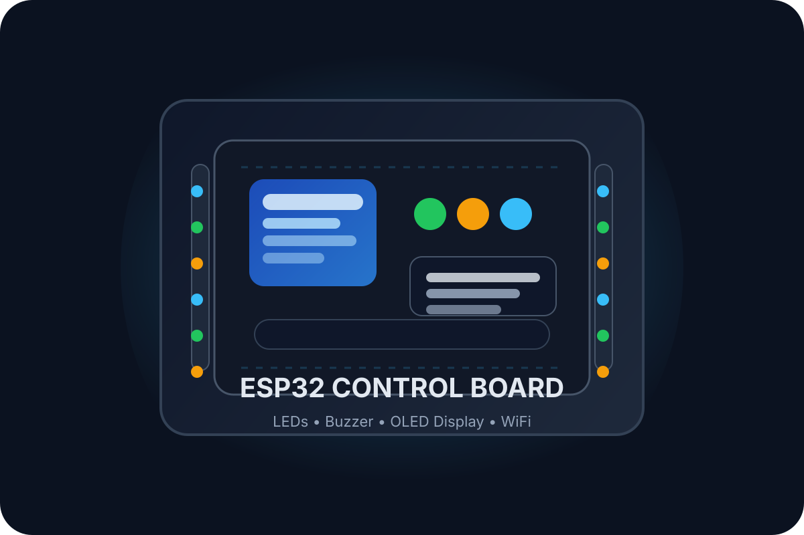

Why I Like AI
I like AI because it can help people learn, create, and solve problems faster. It is useful for coding, writing, design, and building tools that save time.
AI helps ideas move faster. It can explain, generate, suggest, and make projects feel smarter without turning the site into a wall of text.
I like AI because it can help people learn, create, and solve problems faster. It is useful for coding, writing, design, and building tools that save time.
I want to build projects that use AI to support students, simplify everyday tasks, and connect software with real-world hardware in a practical way.
Used for brainstorming, drafting, and quick explanations.
Helpful for writing support and structured thinking.
Useful for exploring ideas and comparing answers.
Helps turn ideas into code faster inside the editor.
Open a simple reference page to learn more about AI and how it is used in the real world.
Learn More About AIThe page uses a generated hardware image, then breaks the project into simple parts so it is easy to understand.

The controller that will receive commands from the website.
Used to connect parts without soldering during testing.
Visual indicators that react to web actions.
Provides sound feedback when a control is triggered.
Can show device status or messages from the dashboard.
Connects the web app to the board when the real hardware arrives.
The portfolio hardware will let the website send simple commands to the ESP32. At first, the dashboard stays fake. Later, the same interface can point to real data and real hardware actions.